소리 설계 VLM 기준선 — qwen35_9b_nf4, 프롬프트 v1, 평가셋 30장, 정답지 v2
| 지표 | 현재 | 12/03 목표 | |
|---|
| 필수 소리원 찾은 비율 | 69% (52/75) | 70% 이상 | 미달 |
| 지어낸 소리 비율 (소리 안 나는 물체 + 그림에 없음) | 23% (35/152) | 15% 이하 | 미달 |
| 위치 오차 대각선 10% 이내 | 86% (53/62) | (전부) | 미달 |
| JSON 성공 | 29/30 | 100% | 미달 |
| 그림 1장 평균 시간 (VLM 단계만) | 62.3초 | 전 과정 10분 이내 | 달성 |
정답지 밖 소리: 들릴 만함 38, 소리 안 나는 물체 24, 그림에 없음 11. 비교: 이전 단어 겹침 채점이면 필수 75%, 짝 없음 46%.
짝짓기: Gemini(gemini-4-neon)가 그림을 보며 뜻으로 판정. 그림: 파랑 원 = 정답지(C번호, 큰 원 = 필수), 주황 네모 = 모델(Q번호).
01_hunters — 눈 속의 사냥꾼 51.7초
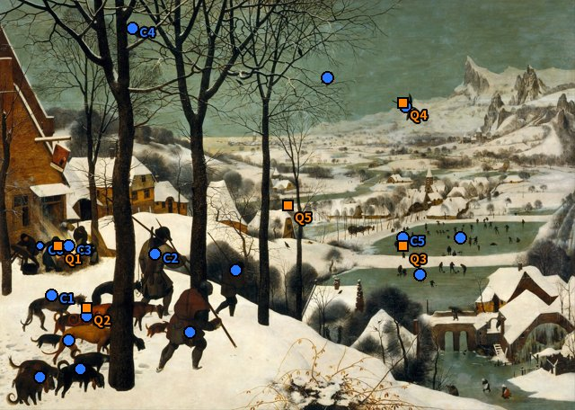
정답지 (초록 = 찾음, 빨강 = 놓침)
- C1 [필수/clustered] 사냥개 발소리와 헐떡임
- C2 [필수/clustered] 사냥꾼의 눈 밟는 발소리
- C3 [필수/point] 모닥불 타는 소리
- C4 [필수/clustered] 까마귀 울음
- C5 [필수/clustered] 스케이트 날과 아이들 웃음
- C6 [허용/point] 모닥불 곁 사람들 소리
- C7 [허용/ambient] 겨울바람
모델 출력 (초록 = 짝 있음, 파랑 = 정답지에 없지만 들릴 만함, 빨강 = 지어냄)
- Q1 불 fire → C3
- Q2 개 dogs → 정답지에 없지만 들릴 만함
- Q3 스케이트 skaters → C5
- Q4 새 birds → 정답지에 없지만 들릴 만함
- Q5 바람 snow-covered landscape → C7
위치 오차
- 모닥불 타는 소리 ↔ 불: 대각선의 1.6%
- 스케이트 날과 아이들 웃음 ↔ 스케이트: 대각선의 1.2%
02_rainy_day — 파리의 거리, 비 오는 날 48.3초
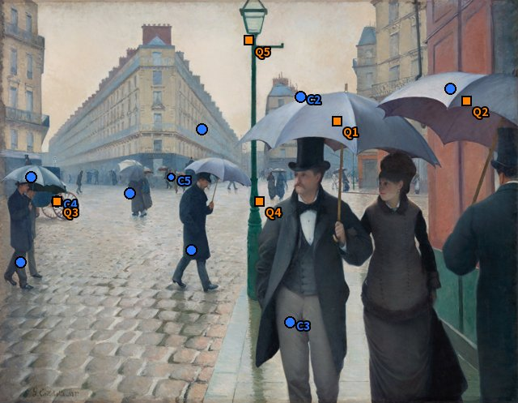
정답지 (초록 = 찾음, 빨강 = 놓침)
- C1 [필수/ambient] 빗소리
- C2 [필수/clustered] 우산에 떨어지는 빗방울
- C3 [필수/clustered] 젖은 돌길 발소리
- C4 [필수/point] 마차 바퀴와 말발굽
- C5 [허용/point] 멀리 지나가는 말
- C6 [허용/ambient] 먼 도시의 웅성임
모델 출력 (초록 = 짝 있음, 파랑 = 정답지에 없지만 들릴 만함, 빨강 = 지어냄)
- Q1 우산 소리 umbrella → C2
- Q2 우산 소리 umbrella → 정답지에 없지만 들릴 만함
- Q3 수레 바퀴 cart → C4
- Q4 사람들 소리 people → C6
- Q5 가로등 street lamp → 지어냄: 소리 안 나는 물체
위치 오차
- 우산에 떨어지는 빗방울 ↔ 우산 소리: 대각선의 6.6%
- 마차 바퀴와 말발굽 ↔ 수레 바퀴: 대각선의 0.0%
03_wave — 가나가와 앞바다의 거대한 파도 64.7초
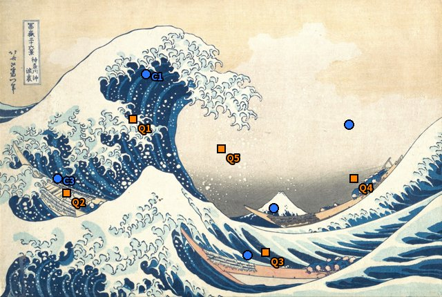
정답지 (초록 = 찾음, 빨강 = 놓침)
- C1 [필수/point] 거대한 파도 부서지는 소리
- C2 [필수/ambient] 거친 바다
- C3 [필수/clustered] 배 삐걱임과 뱃사람 외침
- C4 [허용/ambient] 바닷바람
모델 출력 (초록 = 짝 있음, 파랑 = 정답지에 없지만 들릴 만함, 빨강 = 지어냄)
- Q1 파도 소리 wave → C1
- Q2 배의 삐걱거림 boat → C3
- Q3 배의 삐걱거림 boat → 정답지에 없지만 들릴 만함
- Q4 배의 삐걱거림 boat → 정답지에 없지만 들릴 만함
- Q5 바다 소리 sea → C2
위치 오차
- 거대한 파도 부서지는 소리 ↔ 파도 소리: 대각선의 8.7%
- 배 삐걱임과 뱃사람 외침 ↔ 배의 삐걱거림: 대각선의 3.2%
04_beach — 트루빌 해변 86.1초
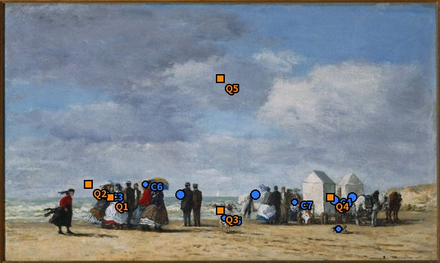
정답지 (초록 = 찾음, 빨강 = 놓침)
- C1 [필수/ambient] 파도 소리
- C2 [필수/ambient] 바닷바람
- C3 [필수/clustered] 해변 사람들의 대화
- C4 [필수/clustered] 말 울음과 말발굽
- C5 [허용/clustered] 개 짖는 소리
- C6 [허용/point] 우산 펄럭임
- C7 [허용/point] 탈의차 바퀴
모델 출력 (초록 = 짝 있음, 파랑 = 정답지에 없지만 들릴 만함, 빨강 = 지어냄)
- Q1 사람들 group of people → C3
- Q2 바다 ocean → C1
- Q3 강아지 dog → C5
- Q4 수레 horse-drawn cart → C7
- Q5 바람 sky → C2
위치 오차
- 해변 사람들의 대화 ↔ 사람들: 대각선의 1.0%
- 개 짖는 소리 ↔ 강아지: 대각선의 1.8%
- 탈의차 바퀴 ↔ 수레: 대각선의 6.9%
05_boulevard — 몽마르트르 대로 40.3초
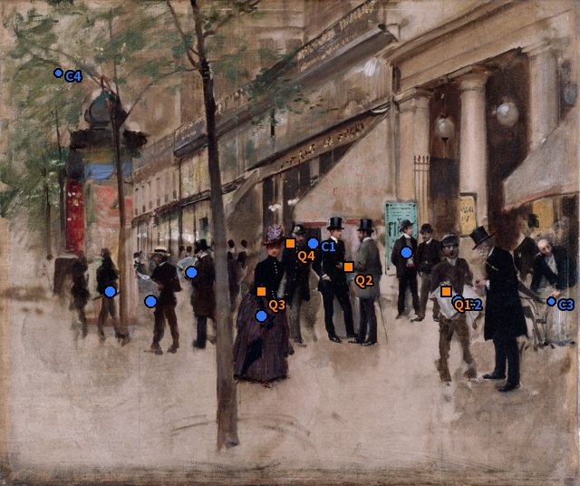
정답지 (초록 = 찾음, 빨강 = 놓침)
- C1 [필수/clustered] 거리 사람들의 대화와 발소리
- C2 [필수/point] 신문팔이 외침
- C3 [허용/point] 자전거 소리
- C4 [허용/point] 가로수 잎 바람
모델 출력 (초록 = 짝 있음, 파랑 = 정답지에 없지만 들릴 만함, 빨강 = 지어냄)
- Q1 신문 newspaper → 정답지에 없지만 들릴 만함
- Q2 대화 men talking → C1
- Q3 걸음걸이 woman walking → 정답지에 없지만 들릴 만함
- Q4 거리 소음 street scene → 정답지에 없지만 들릴 만함
위치 오차
- 거리 사람들의 대화와 발소리 ↔ 대화: 대각선의 5.6%
06_ssireum — 씨름 49.4초
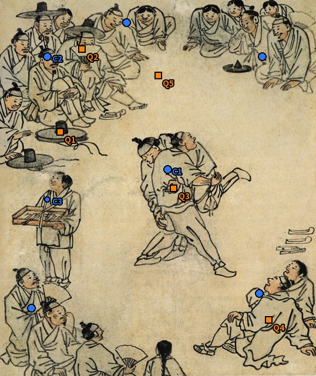
정답지 (초록 = 찾음, 빨강 = 놓침)
- C1 [필수/point] 씨름꾼 몸싸움과 기합
- C2 [필수/clustered] 구경꾼 환호와 웃음
- C3 [허용/point] 엿장수 외침
모델 출력 (초록 = 짝 있음, 파랑 = 정답지에 없지만 들릴 만함, 빨강 = 지어냄)
- Q1 바둑판 소리 Go board → 지어냄: 그림에 없음
- Q2 부채 소리 Fan → 정답지에 없지만 들릴 만함
- Q3 싸우는 소리 Two men wrestling → C1
- Q4 넘어가는 소리 Man falling → 정답지에 없지만 들릴 만함
- Q5 사람들 소란 Crowd of people → C2
위치 오차
- 씨름꾼 몸싸움과 기합 ↔ 싸우는 소리: 대각선의 4.0%
- 구경꾼 환호와 웃음 ↔ 사람들 소란: 대각선의 12.5%
07_seodang — 서당 44.0초
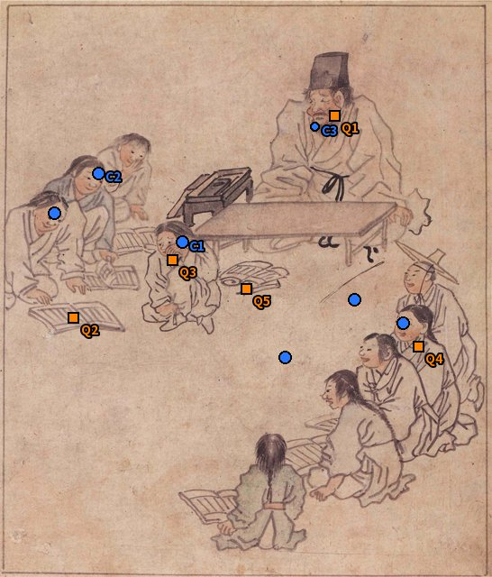
정답지 (초록 = 찾음, 빨강 = 놓침)
- C1 [필수/point] 훈장에게 혼난 아이의 훌쩍임
- C2 [필수/clustered] 아이들의 킥킥 웃음
- C3 [허용/point] 훈장의 말소리
모델 출력 (초록 = 짝 있음, 파랑 = 정답지에 없지만 들릴 만함, 빨강 = 지어냄)
- Q1 선생님 teacher → C3
- Q2 책 open book → 정답지에 없지만 들릴 만함
- Q3 졸은 학생 sleeping student → 정답지에 없지만 들릴 만함
- Q4 속삭임 group of students → C2
- Q5 교실 classroom space → 지어냄: 소리 안 나는 물체
위치 오차
- 훈장의 말소리 ↔ 선생님: 대각선의 3.0%
- 아이들의 킥킥 웃음 ↔ 속삭임: 대각선의 3.6%
08_mudong — 무동 48.1초
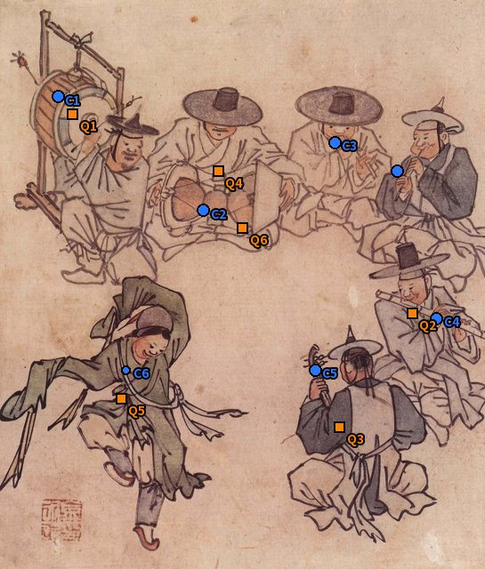
정답지 (초록 = 찾음, 빨강 = 놓침)
- C1 [필수/point] 북 소리
- C2 [필수/point] 장구 소리
- C3 [필수/clustered] 피리 소리
- C4 [필수/point] 대금 소리
- C5 [필수/point] 해금 소리
- C6 [허용/point] 춤추는 아이의 소매 휘날림과 발 구름
모델 출력 (초록 = 짝 있음, 파랑 = 정답지에 없지만 들릴 만함, 빨강 = 지어냄)
- Q1 북소리 drum → C1
- Q2 피리소리 flute → C3
- Q3 기타소리 guitar → 지어냄: 그림에 없음
- Q4 대금소리 double bass → 지어냄: 그림에 없음
- Q5 춤추는 소리 dancing figure → C6
- Q6 사람들 소리 group of people → 정답지에 없지만 들릴 만함
위치 오차
- 북 소리 ↔ 북소리: 대각선의 3.0%
- 피리 소리 ↔ 피리소리: 대각선의 19.1%
- 춤추는 아이의 소매 휘날림과 발 구름 ↔ 춤추는 소리: 대각선의 3.9%
09_danopungjeong — 단오풍정 52.3초
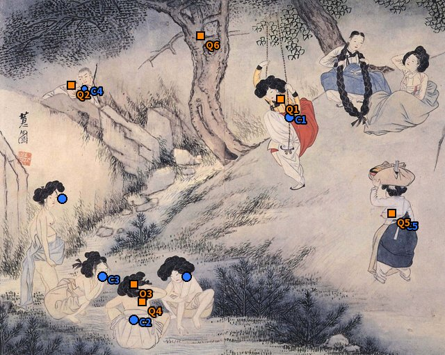
정답지 (초록 = 찾음, 빨강 = 놓침)
- C1 [필수/point] 그네 삐걱임
- C2 [필수/point] 개울물 소리
- C3 [필수/clustered] 여인들의 웃음과 물장구
- C4 [허용/point] 몰래 엿보는 아이들의 킥킥거림
- C5 [허용/point] 보따리 이고 가는 발소리
- C6 [허용/ambient] 나뭇잎 바람
모델 출력 (초록 = 짝 있음, 파랑 = 정답지에 없지만 들릴 만함, 빨강 = 지어냄)
- Q1 진자 girl on swing → C1
- Q2 바위 two boys peeking from rock → C4
- Q3 물소리 stream → C2
- Q4 물놀이 women bathing in stream → C3
- Q5 보통 woman walking with basket → C5
- Q6 바람 trees → C6
위치 오차
- 그네 삐걱임 ↔ 진자: 대각선의 3.5%
- 몰래 엿보는 아이들의 킥킥거림 ↔ 바위: 대각선의 2.4%
- 개울물 소리 ↔ 물소리: 대각선의 6.2%
- 여인들의 웃음과 물장구 ↔ 물놀이: 대각선의 8.3%
- 보따리 이고 가는 발소리 ↔ 보통: 대각선의 2.4%
10_inwang — 인왕제색도 45.8초
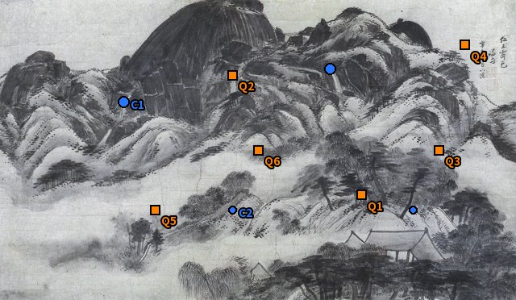
정답지 (초록 = 찾음, 빨강 = 놓침)
- C1 [필수/clustered] 비 갠 뒤 폭포 소리
- C2 [허용/clustered] 소나무 숲 바람
- C3 [허용/ambient] 비 갠 산의 물방울과 안개
모델 출력 (초록 = 짝 있음, 파랑 = 정답지에 없지만 들릴 만함, 빨강 = 지어냄)
- Q1 바람 pine trees → C2
- Q2 폭포 waterfall → C1
- Q3 새소리 bird → 지어냄: 그림에 없음
- Q4 종소리 temple bell → 지어냄: 그림에 없음
- Q5 발소리 path → 지어냄: 그림에 없음
- Q6 바람 mountain air → 정답지에 없지만 들릴 만함
위치 오차
- 소나무 숲 바람 ↔ 바람: 대각선의 9.0%
- 비 갠 뒤 폭포 소리 ↔ 폭포: 대각선의 16.5%
11_shower — 오하시 아타케의 소나기 41.6초
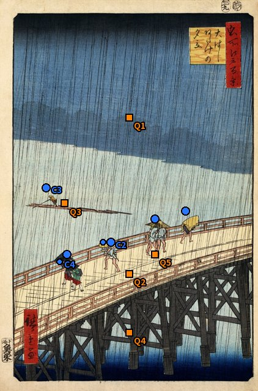
정답지 (초록 = 찾음, 빨강 = 놓침)
- C1 [필수/ambient] 소나기 빗소리
- C2 [필수/clustered] 다리 위를 뛰는 발소리
- C3 [필수/point] 뗏목 사공의 장대와 물소리
- C4 [허용/clustered] 삿갓과 우산에 떨어지는 빗방울
- C5 [허용/ambient] 강물 흐르는 소리
모델 출력 (초록 = 짝 있음, 파랑 = 정답지에 없지만 들릴 만함, 빨강 = 지어냄)
- Q1 비 rain → C1
- Q2 걷는 사람들 people walking on bridge → C2
- Q3 낚시하는 사람 fisherman with pole → 지어냄: 그림에 없음
- Q4 나무 다리 wooden bridge structure → 정답지에 없지만 들릴 만함
- Q5 우산 umbrellas → 정답지에 없지만 들릴 만함
위치 오차
- 다리 위를 뛰는 발소리 ↔ 걷는 사람들: 대각선의 7.7%
12_kambara — 가바라 밤의 눈 43.2초
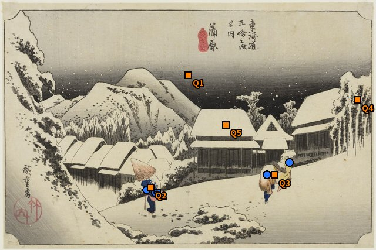
정답지 (초록 = 찾음, 빨강 = 놓침)
- C1 [필수/clustered] 눈 밟는 발소리
- C2 [허용/ambient] 고요한 눈 내리는 밤
모델 출력 (초록 = 짝 있음, 파랑 = 정답지에 없지만 들릴 만함, 빨강 = 지어냄)
- Q1 눈 내리는 소리 snow → C2
- Q2 걷는 발소리 people walking → C1
- Q3 말의 발소리 horse → 지어냄: 그림에 없음
- Q4 바람 소리 trees → 정답지에 없지만 들릴 만함
- Q5 지붕 눈 소리 snow on roof → 지어냄: 소리 안 나는 물체
위치 오차
- 눈 밟는 발소리 ↔ 걷는 발소리: 대각선의 1.0%
13_qingming — 청명상하도 (무지개다리 부분) 52.4초
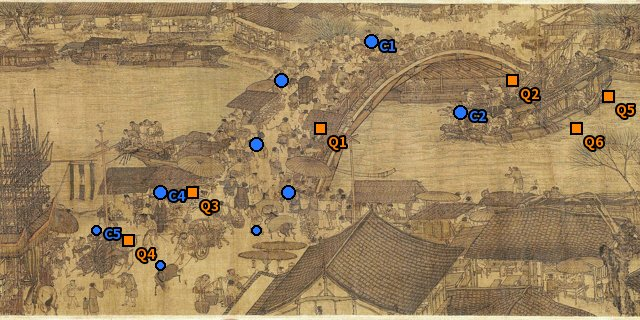
정답지 (초록 = 찾음, 빨강 = 놓침)
- C1 [필수/clustered] 다리 위 군중의 웅성임
- C2 [필수/point] 다리 밑 배의 사공들 외침
- C3 [필수/ambient] 강물 소리
- C4 [필수/clustered] 시장 상인들의 호객
- C5 [허용/clustered] 수레와 짐승 소리
모델 출력 (초록 = 짝 있음, 파랑 = 정답지에 없지만 들릴 만함, 빨강 = 지어냄)
- Q1 사람 소음 crowd of people → C1
- Q2 배 노 소리 boats with oars → C2
- Q3 산산 소리 umbrellas → 지어냄: 소리 안 나는 물체
- Q4 수레 바퀴 소리 wheelbarrow → C5
- Q5 새 소리 bird in tree → 지어냄: 그림에 없음
- Q6 바람 소리 bare trees → 정답지에 없지만 들릴 만함
위치 오차
- 다리 위 군중의 웅성임 ↔ 사람 소음: 대각선의 8.6%
- 다리 밑 배의 사공들 외침 ↔ 배 노 소리: 대각선의 8.4%
- 수레와 짐승 소리 ↔ 수레 바퀴 소리: 대각선의 4.7%
14_tage — 답가도 (부분) 80.0초
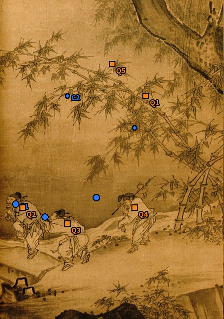
정답지 (초록 = 찾음, 빨강 = 놓침)
- C1 [필수/clustered] 농부들의 노래·웃음과 발 구르기
- C2 [허용/clustered] 대나무 잎 바람
모델 출력 (초록 = 짝 있음, 파랑 = 정답지에 없지만 들릴 만함, 빨강 = 지어냄)
- Q1 대나무 bamboo → 정답지에 없지만 들릴 만함
- Q2 남자 man → 정답지에 없지만 들릴 만함
- Q3 남자 man → C1
- Q4 남자 man → 정답지에 없지만 들릴 만함
- Q5 바람 bamboo → C2
위치 오차
- 농부들의 노래·웃음과 발 구르기 ↔ 남자: 대각선의 6.0%
- 대나무 잎 바람 ↔ 바람: 대각선의 14.1%
15_galette — 물랭 드 라 갈레트의 무도회 110.0초
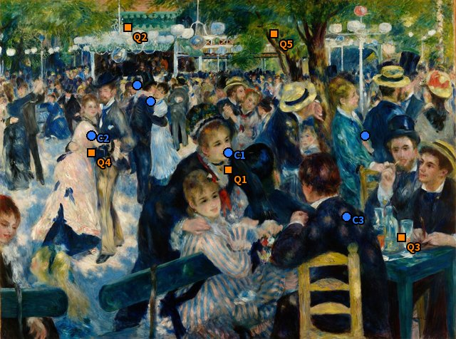
정답지 (초록 = 찾음, 빨강 = 놓침)
- C1 [필수/clustered] 사람들의 대화와 웃음
- C2 [필수/clustered] 춤추는 발소리
- C3 [필수/point] 잔 부딪히는 소리
- C4 [허용/ambient] 야외 무도회 음악
- C5 [허용/ambient] 나뭇잎 바람
모델 출력 (초록 = 짝 있음, 파랑 = 정답지에 없지만 들릴 만함, 빨강 = 지어냄)
- Q1 사람들의 속삭임 crowd of people → C1
- Q2 악기 연주 chandelier under awning → C4
- Q3 잔 부딪히는 소리 glass on table → C3
- Q4 춤추는 발소리 dancing couple → C2
- Q5 바람 소리 trees in background → C5
위치 오차
- 사람들의 대화와 웃음 ↔ 사람들의 속삭임: 대각선의 3.0%
- 잔 부딪히는 소리 ↔ 잔 부딪히는 소리: 대각선의 10.3%
- 춤추는 발소리 ↔ 춤추는 발소리: 대각선의 3.0%
16_horsefair — 말 시장 3.1초 · JSON 실패
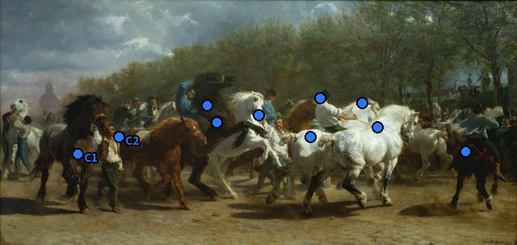
정답지 (초록 = 찾음, 빨강 = 놓침)
- C1 [필수/clustered] 말발굽과 말 울음
- C2 [필수/clustered] 마부들의 고함
- C3 [허용/ambient] 장터 사람들 웅성임
모델 출력 (초록 = 짝 있음, 파랑 = 정답지에 없지만 들릴 만함, 빨강 = 지어냄)
위치 오차
17_rainsteam — 비, 증기, 속도 70.6초
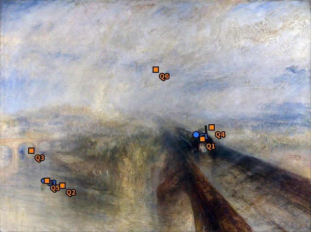
정답지 (초록 = 찾음, 빨강 = 놓침)
- C1 [필수/point] 증기기관차 소리와 기적
- C2 [필수/ambient] 비바람
- C3 [허용/point] 강 위 작은 배
모델 출력 (초록 = 짝 있음, 파랑 = 정답지에 없지만 들릴 만함, 빨강 = 지어냄)
- Q1 기차 steam train → C1
- Q2 강물 river → 정답지에 없지만 들릴 만함
- Q3 다리 stone bridge → 지어냄: 소리 안 나는 물체
- Q4 증기 steam plume → 정답지에 없지만 들릴 만함
- Q5 보트 small boats → C3
- Q6 바람 wind → C2
위치 오차
- 증기기관차 소리와 기적 ↔ 기차: 대각선의 2.0%
- 강 위 작은 배 ↔ 보트: 대각선의 0.8%
18_milkmaid — 우유 따르는 여인 (함정: 조용한 실내) 76.5초
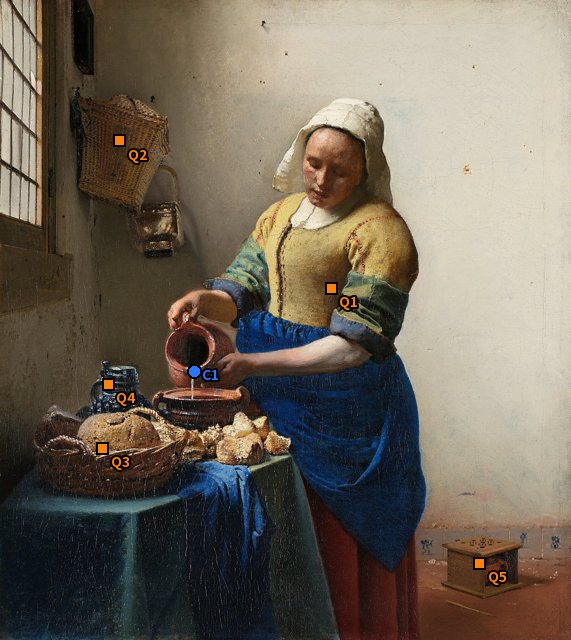
정답지 (초록 = 찾음, 빨강 = 놓침)
모델 출력 (초록 = 짝 있음, 파랑 = 정답지에 없지만 들릴 만함, 빨강 = 지어냄)
- Q1 우유 부는 여인 woman → C1
- Q2 벽에 걸린 바구니 woven basket → 지어냄: 소리 안 나는 물체
- Q3 빵 바구니 bread basket → 지어냄: 소리 안 나는 물체
- Q4 파란 항아리 blue ceramic jug → 지어냄: 소리 안 나는 물체
- Q5 나무 상자 wooden box → 지어냄: 소리 안 나는 물체
위치 오차
- 우유 따르는 소리 ↔ 우유 부는 여인: 대각선의 18.7%
19_peasantwedding — 농민의 결혼식 48.2초
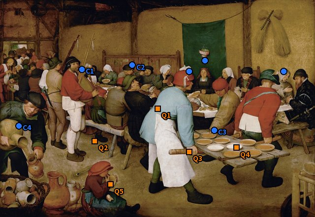
정답지 (초록 = 찾음, 빨강 = 놓침)
- C1 [필수/point] 백파이프 연주
- C2 [필수/clustered] 잔치 사람들의 대화와 웃음
- C3 [필수/clustered] 그릇과 숟가락 소리
- C4 [필수/point] 술 따르는 소리
모델 출력 (초록 = 짝 있음, 파랑 = 정답지에 없지만 들릴 만함, 빨강 = 지어냄)
- Q1 사람들 소음 crowd of people → C2
- Q2 잔 부딪히는 소리 drinking vessels → 정답지에 없지만 들릴 만함
- Q3 걸음걸이 소리 people walking → 정답지에 없지만 들릴 만함
- Q4 접시 놓는 소리 wooden bowls → C3
- Q5 아이 먹는 소리 child eating → 정답지에 없지만 들릴 만함
위치 오차
- 잔치 사람들의 대화와 웃음 ↔ 사람들 소음: 대각선의 13.1%
- 그릇과 숟가락 소리 ↔ 접시 놓는 소리: 대각선의 7.3%
20_pearl — 진주 귀고리를 한 소녀 (함정: 초상) 54.4초
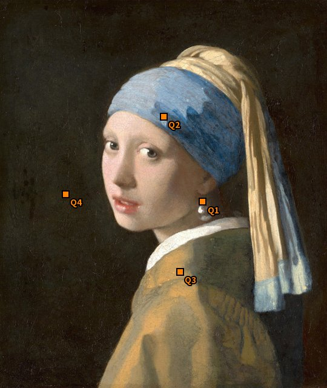
정답지 (초록 = 찾음, 빨강 = 놓침)
모델 출력 (초록 = 짝 있음, 파랑 = 정답지에 없지만 들릴 만함, 빨강 = 지어냄)
- Q1 진주 귀걸이 pearl earring → 지어냄: 소리 안 나는 물체
- Q2 파란 머리띠 blue headscarf → 지어냄: 소리 안 나는 물체
- Q3 노란 옷 어깨 yellow shoulder garment → 지어냄: 소리 안 나는 물체
- Q4 바람 소리 dark background → 지어냄: 소리 안 나는 물체
위치 오차
21_snapwhip — 채찍 놀이 88.5초
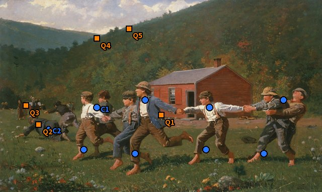
정답지 (초록 = 찾음, 빨강 = 놓침)
- C1 [필수/clustered] 아이들 함성과 달리는 발소리
- C2 [허용/point] 넘어진 아이들
- C3 [허용/ambient] 산골 바람과 새소리
모델 출력 (초록 = 짝 있음, 파랑 = 정답지에 없지만 들릴 만함, 빨강 = 지어냄)
- Q1 달리는 소년들 group of boys running → C1
- Q2 넘어가는 소년 boy falling on grass → C2
- Q3 배경에서 놀고 있는 소년들 group of boys playing in background → 정답지에 없지만 들릴 만함
- Q4 바람 부는 나무들 trees on hillside → 정답지에 없지만 들릴 만함
- Q5 나무에 있는 새들 birds in trees → C3
위치 오차
- 아이들 함성과 달리는 발소리 ↔ 달리는 소년들: 대각선의 5.9%
- 넘어진 아이들 ↔ 넘어가는 소년: 대각선의 2.8%
22_liverpool — 달빛 속 리버풀 부두 95.6초
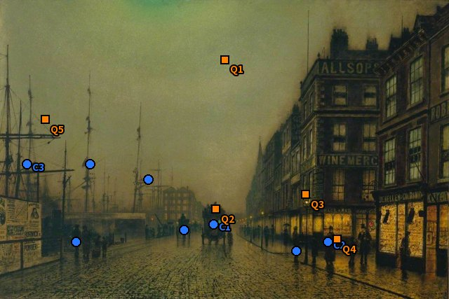
정답지 (초록 = 찾음, 빨강 = 놓침)
- C1 [필수/point] 마차 바퀴와 말발굽
- C2 [필수/clustered] 젖은 보도의 발소리
- C3 [필수/clustered] 항구의 배 삐걱임과 밧줄
- C4 [허용/ambient] 밤거리 비 내린 뒤 물소리
모델 출력 (초록 = 짝 있음, 파랑 = 정답지에 없지만 들릴 만함, 빨강 = 지어냄)
- Q1 안개 foggy sky → 지어냄: 소리 안 나는 물체
- Q2 마차 horse-drawn carriage → C1
- Q3 가로등 street lamp → 지어냄: 소리 안 나는 물체
- Q4 사람들 pedestrians → C2
- Q5 돛대 ship masts → C3
위치 오차
- 마차 바퀴와 말발굽 ↔ 마차: 대각선의 2.8%
- 젖은 보도의 발소리 ↔ 사람들: 대각선의 1.8%
- 항구의 배 삐걱임과 밧줄 ↔ 돛대: 대각선의 9.0%
23_tuileries — 튈르리 공원의 음악회 107.2초
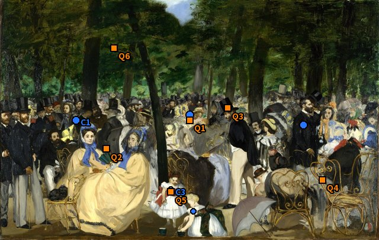
정답지 (초록 = 찾음, 빨강 = 놓침)
- C1 [필수/clustered] 공원의 사람들 대화
- C2 [필수/ambient] 야외 음악회
- C3 [허용/clustered] 아이들 노는 소리
- C4 [허용/ambient] 나뭇잎 바람
모델 출력 (초록 = 짝 있음, 파랑 = 정답지에 없지만 들릴 만함, 빨강 = 지어냄)
- Q1 사람들의 소음 crowd of people → C1
- Q2 파란 부채 blue fan → 정답지에 없지만 들릴 만함
- Q3 모자 top hat → 지어냄: 소리 안 나는 물체
- Q4 의자 wicker chair → 정답지에 없지만 들릴 만함
- Q5 아이들의 웃음 children playing → C3
- Q6 바람 trees → C4
위치 오차
- 공원의 사람들 대화 ↔ 사람들의 소음: 대각선의 1.1%
- 아이들 노는 소리 ↔ 아이들의 웃음: 대각선의 0.5%
24_avercamp — 스케이트 타는 사람들이 있는 겨울 풍경 (부분) 74.7초
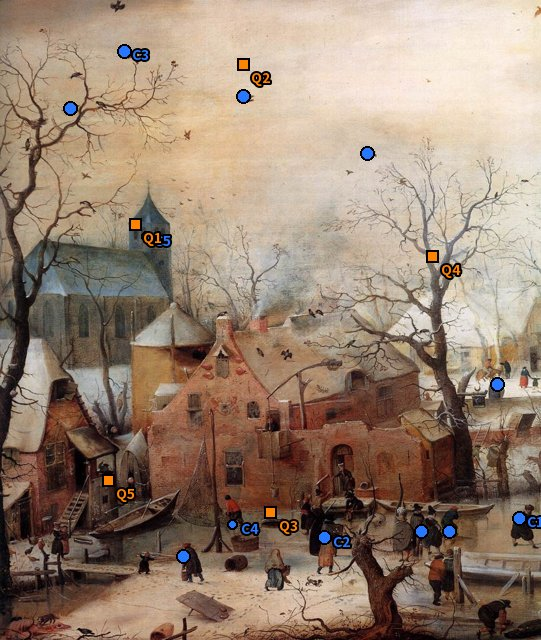
정답지 (초록 = 찾음, 빨강 = 놓침)
- C1 [필수/clustered] 스케이트와 얼음 소리
- C2 [필수/clustered] 마을 사람들 소리
- C3 [필수/clustered] 새소리
- C4 [허용/point] 얼음 구멍에서 물 긷는 소리
- C5 [허용/point] 교회 종소리
모델 출력 (초록 = 짝 있음, 파랑 = 정답지에 없지만 들릴 만함, 빨강 = 지어냄)
- Q1 종소리 church tower → C5
- Q2 새소리 birds in sky → C3
- Q3 사람들 말소리 people in foreground → C2
- Q4 바람 소리 bare trees → 정답지에 없지만 들릴 만함
- Q5 배 소리 wooden boat → 지어냄: 소리 안 나는 물체
위치 오차
- 교회 종소리 ↔ 종소리: 대각선의 2.0%
- 새소리 ↔ 새소리: 대각선의 3.8%
- 마을 사람들 소리 ↔ 사람들 말소리: 대각선의 7.1%
25_bargehaulers — 볼가강의 배 끄는 인부들 69.7초
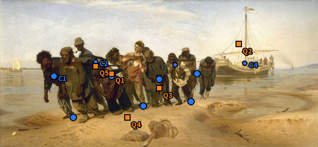
정답지 (초록 = 찾음, 빨강 = 놓침)
- C1 [필수/clustered] 인부들의 신음과 무거운 발소리
- C2 [허용/clustered] 밧줄 당기는 삐걱임
- C3 [필수/ambient] 강물과 바람
- C4 [허용/point] 범선 삐걱임
모델 출력 (초록 = 짝 있음, 파랑 = 정답지에 없지만 들릴 만함, 빨강 = 지어냄)
- Q1 어부들 group of fishermen → C1
- Q2 배 sailing ship → C4
- Q3 바다 sea surface → C3
- Q4 모래 beach sand → 정답지에 없지만 들릴 만함
- Q5 사람들 group of people → 정답지에 없지만 들릴 만함
위치 오차
- 인부들의 신음과 무거운 발소리 ↔ 어부들: 대각선의 0.8%
- 범선 삐걱임 ↔ 배: 대각선의 5.8%
26_ironmill — 철 압연 공장 80.9초
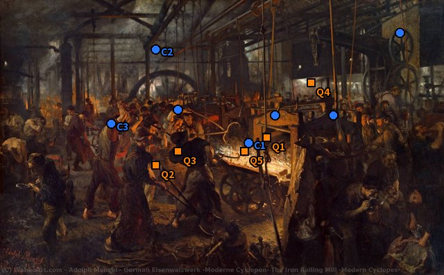
정답지 (초록 = 찾음, 빨강 = 놓침)
- C1 [필수/point] 달군 쇠를 끄는 금속 소리와 지글거림
- C2 [필수/clustered] 기계 바퀴와 압연기 굉음
- C3 [필수/clustered] 노동자들의 고함
모델 출력 (초록 = 짝 있음, 파랑 = 정답지에 없지만 들릴 만함, 빨강 = 지어냄)
- Q1 철제 롤링 밀 rolling mill machine → C2
- Q2 망치질하는 노동자 worker with hammer → 지어냄: 그림에 없음
- Q3 노동자들의 목소리 crowd of workers → C3
- Q4 증기 밸브 steam pipe or valve → 정답지에 없지만 들릴 만함
- Q5 뜨거운 금속 이동 hot metal being moved → C1
위치 오차
- 기계 바퀴와 압연기 굉음 ↔ 철제 롤링 밀: 대각선의 4.5%
- 노동자들의 고함 ↔ 노동자들의 목소리: 대각선의 7.9%
- 달군 쇠를 끄는 금속 소리와 지글거림 ↔ 뜨거운 금속 이동: 대각선의 1.8%
27_merryfamily — 즐거운 가족 82.4초
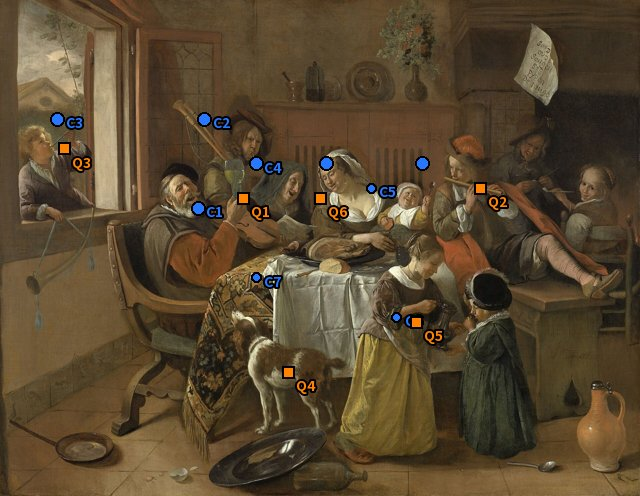
정답지 (초록 = 찾음, 빨강 = 놓침)
- C1 [필수/point] 바이올린 연주
- C2 [필수/point] 백파이프 소리
- C3 [필수/clustered] 피리 부는 아이들
- C4 [필수/clustered] 가족의 노래
- C5 [허용/point] 아기 소리
- C6 [허용/point] 술 따르는 소리
- C7 [허용/point] 개 소리
모델 출력 (초록 = 짝 있음, 파랑 = 정답지에 없지만 들릴 만함, 빨강 = 지어냄)
- Q1 루트 연주 lute → 지어냄: 그림에 없음
- Q2 플루트 소리 flute → C3
- Q3 호프 소리 horn → 정답지에 없지만 들릴 만함
- Q4 강아지 짖음 dog → C7
- Q5 물 부음 pitcher → C6
- Q6 사람들 소란 people → 정답지에 없지만 들릴 만함
위치 오차
- 피리 부는 아이들 ↔ 플루트 소리: 대각선의 7.7%
- 개 소리 ↔ 강아지 짖음: 대각선의 12.3%
- 술 따르는 소리 ↔ 물 부음: 대각선의 2.4%
28_railwaystation — 기차역 64.7초
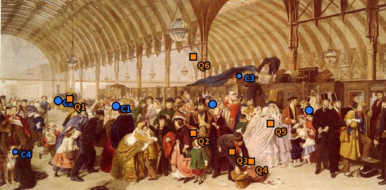
정답지 (초록 = 찾음, 빨강 = 놓침)
- C1 [필수/clustered] 역 군중의 웅성임
- C2 [필수/point] 증기기관차
- C3 [허용/point] 짐 싣는 소리
- C4 [허용/point] 개 짖는 소리
- C5 [허용/ambient] 역 지붕 아래 울림
모델 출력 (초록 = 짝 있음, 파랑 = 정답지에 없지만 들릴 만함, 빨강 = 지어냄)
- Q1 기차 steam locomotive → C2
- Q2 사람들 crowd of people → C1
- Q3 남자 man bowing → 정답지에 없지만 들릴 만함
- Q4 가방 luggage being dropped → C3
- Q5 여자 woman wrapping herself → 지어냄: 소리 안 나는 물체
- Q6 역장 train station hall → C5
위치 오차
- 증기기관차 ↔ 기차: 대각선의 2.7%
- 역 군중의 웅성임 ↔ 사람들: 대각선의 8.0%
- 짐 싣는 소리 ↔ 가방: 대각선의 20.1%
29_ninthwave — 아홉 번째 파도 45.1초
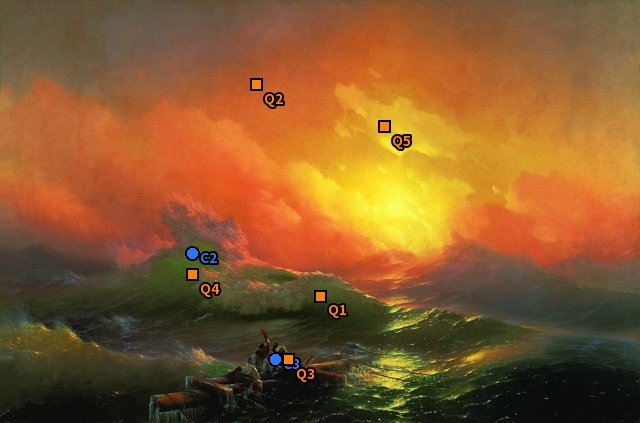
정답지 (초록 = 찾음, 빨강 = 놓침)
- C1 [필수/ambient] 폭풍 바다
- C2 [필수/point] 거대한 파도 부서짐
- C3 [필수/point] 난파된 사람들의 외침
- C4 [허용/ambient] 폭풍 바람
모델 출력 (초록 = 짝 있음, 파랑 = 정답지에 없지만 들릴 만함, 빨강 = 지어냄)
- Q1 거친 바다 ocean waves → C1
- Q2 바람 소리 sky clouds → C4
- Q3 배에 있는 사람들 people in boat → C3
- Q4 파도 충돌 large wave → C2
- Q5 천둥소리 storm clouds → 정답지에 없지만 들릴 만함
위치 오차
- 난파된 사람들의 외침 ↔ 배에 있는 사람들: 대각선의 1.7%
- 거대한 파도 부서짐 ↔ 파도 충돌: 대각선의 2.8%
30_stilllife — 금박 잔이 있는 정물 (함정: 정물) 50.3초
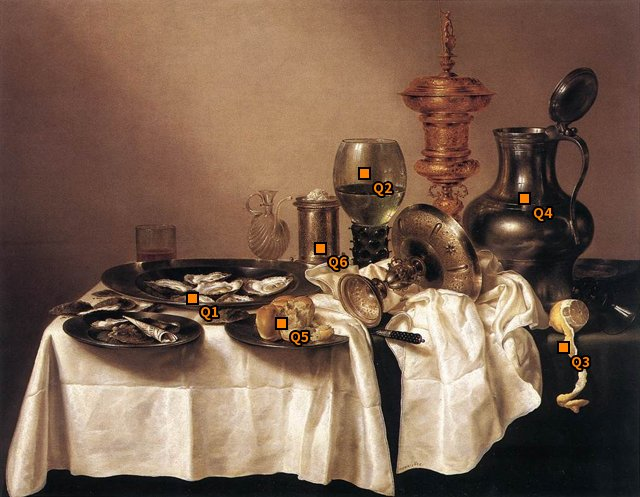
정답지 (초록 = 찾음, 빨강 = 놓침)
모델 출력 (초록 = 짝 있음, 파랑 = 정답지에 없지만 들릴 만함, 빨강 = 지어냄)
- Q1 굴 접시 oyster platter → 지어냄: 소리 안 나는 물체
- Q2 와인 잔 wine glass → 지어냄: 소리 안 나는 물체
- Q3 레몬 껍질 lemon peel → 지어냄: 소리 안 나는 물체
- Q4 은색 주전자 silver pitcher → 지어냄: 소리 안 나는 물체
- Q5 빵 bread roll → 지어냄: 소리 안 나는 물체
- Q6 배경 공간 background space → 지어냄: 소리 안 나는 물체
위치 오차